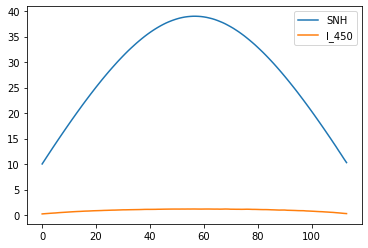
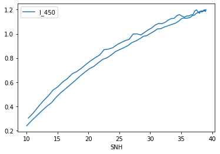
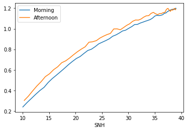
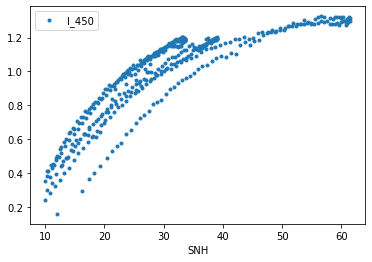

Reading MATLAB .mat files
Contents
Reading MATLAB .mat files¶
In one of the radiation lecture, you are asked to read files in the MATLAB .mat files (one file per day with vectors of I measured at
the surface at 450 nm, along with the sun elevation angle for each measurement SNH). There seem to be no time attached to these measurements. Here is an example of how to read one of the file into a pandas dataframe with help of the scipy library:
Reading mat files¶
from scipy.io import loadmat # this is the SciPy module that loads mat-files
import pandas as pd
import matplotlib.pyplot as plt
mat = loadmat('I_and_SNH_20111003.mat')
# Put all columns which are not weird MATLAB ones into a dataframe
df = pd.DataFrame()
for k in mat:
if '__' in k:
continue
df[k] = mat[k].flatten()
# Name it "day1" for clarity
df_day1 = df
df_day1
| SNH | I_450 | |
|---|---|---|
| 0 | 10.028338 | 0.238662 |
| 1 | 10.838524 | 0.282054 |
| 2 | 11.646388 | 0.321627 |
| 3 | 12.446173 | 0.361128 |
| 4 | 13.246367 | 0.398293 |
| ... | ... | ... |
| 109 | 13.503050 | 0.485676 |
| 110 | 12.684507 | 0.442991 |
| 111 | 11.890372 | 0.395319 |
| 112 | 11.071531 | 0.343366 |
| 113 | 10.293703 | 0.302224 |
114 rows × 2 columns
Plots¶
df_day1.plot();

df_day1.plot(x='SNH', y='I_450');

df_day1_morning = df_day1.loc[:df_day1['SNH'].argmax()]
df_day1_afternoon = df_day1.loc[df_day1['SNH'].argmax()+1:]
f, ax = plt.subplots()
df_day1_morning.plot(x='SNH', y='I_450', ax=ax, label='Morning');
df_day1_afternoon.plot(x='SNH', y='I_450', ax=ax, label='Afternoon');

Merge several days into one dataframe¶
import glob
all_df = []
for f in sorted(glob.glob('*.mat')):
mat = loadmat(f)
# Put all columns which are not weird MATLAB ones into a dataframe
df = pd.DataFrame()
for k in mat:
if '__' in k:
continue
df[k] = mat[k].flatten()
df['date'] = f.split('_')[-1].split('.')[0]
all_df.append(df)
all_df = pd.concat(all_df, ignore_index=True)
all_df
| SNH | I_450 | date | |
|---|---|---|---|
| 0 | 10.028338 | 0.238662 | 20111003 |
| 1 | 10.838524 | 0.282054 | 20111003 |
| 2 | 11.646388 | 0.321627 | 20111003 |
| 3 | 12.446173 | 0.361128 | 20111003 |
| 4 | 13.246367 | 0.398293 | 20111003 |
| ... | ... | ... | ... |
| 450 | 16.725457 | 0.630984 | 20120514 |
| 451 | 15.535872 | 0.577296 | 20120514 |
| 452 | 14.617152 | 0.532635 | 20120514 |
| 453 | 13.705881 | 0.487820 | 20120514 |
| 454 | 12.807493 | 0.449735 | 20120514 |
455 rows × 3 columns
all_df.plot(x='SNH', y='I_450', style='.');
